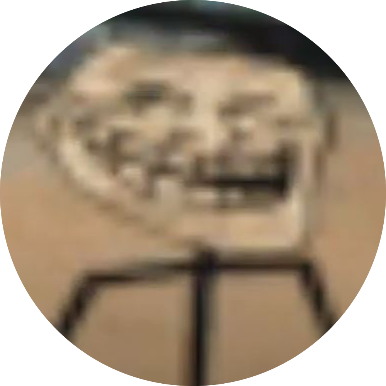
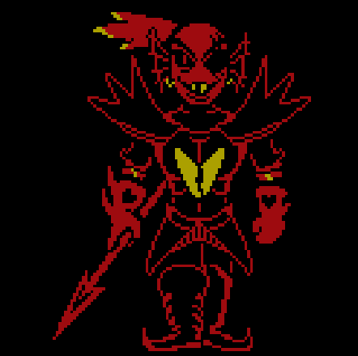

<
Home
Portfolio
>
My Portfolio.
A collection of some garry's mod addons i worked on for servers or my own enjoyment, unfortunately many files have been lost to a hard drive getting bricked. Language used: LUA

The github repository to this website, my first propper site with limited help from online searches. Languages used: HTML, Javascript

An undertale fangame coded from scracth using gamemaker studio as the engine. 3000+ impressions over multiple sites. Language used: GML
Game made in 3 days for the cozy autumn gamme jam. 200+ impressions over multiple sites. Language used: GML